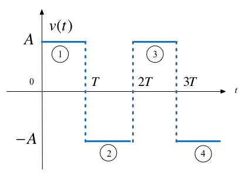

Examples 3 - Elementary Signals
Contents
Lecturer: Set up MATLAB
clear all
format compact
Examples 3 - Elementary Signals#
To accompany Unit 2.3: Elementary Signals.
Follow along at cpjobling.github.io/eg-150-textbook/signals_and_systems/elementary_signals/examples3

Plot the Unit Step#
\(v_1(t) = A u_0(t)\)
syms t
u0(t) = heaviside(t); % allows us to type u0(t) in our formulae
A = 2; T = 2; % we need numerical values to get a successful plot
v1(t) = A*u0(t)
fplot(v1,'LineWidth',2),title('Unit step'),subtitle(texlabel('v_1(t) = Au_0(t)')),grid,xlabel('t')
3.1: Other forms of unit step#
MATLAB Example
We will solve this example by hand and then give the solution in the MATLAB lab.
Use the MATLAB functions subplot, heaviside and fplot to reproduce Fig. 22.

Fig. 22 Other forms of unit step function (Figure 1.8 [Karris, 2012])#
We’ve done the first row for you.
a). \(v_1(t) = -Au_0(t)\)
clf % clear figures
sgtitle('Other forms of the unit step function');
subplot(331)
v2(t) = -A*u0(t)
fplot(v1,'LineWidth',2),title(['a) ',texlabel('v_2(t) = -A*u_0(t)')]),grid,xlabel('t')
b). \(v_3(t) = -A(t - T)\)
subplot(332)
v3(t) = -A*u0(t - T)
fplot(v3(t),'LineWidth',2),title(['b) ',texlabel('v_3(t) = -A*u_0(t-T)')]),grid,xlabel('t')
c). \(v_4(t) = -A(t + T)\)
subplot(333)
v4(t) = -A*u0(t + T)
fplot(v4(t),'LineWidth',2),title(['c) ',texlabel('v_4(t) = -A*u_0(t+T)')]),xlabel('t')
d). \(v_5(t) = Au_0(-t)\)
e). \(v_6(t) = Au_0(-t + T)\)
f). \(v_7(t) = Au_0(-t - T)\)
g). \(v_8(t) = -Au_0(-t)\)
h). \(v_9(t) = -Au_0(-t + T)\)
i). \(v_{10}(t) = -Au_0(-t - T)\)
The result should look like Fig. 23.

Fig. 23 Other forms of unit step function (Figure 1.8 [Karris, 2012]) reproduced in MATLAB#
3.2: Synthesis of Signals from Unit Step#
MATLAB Example
We will solve this example by hand and then give the solution in the MATLAB lab.
Unit step functions can be used to represent other time-varying functions such as rectangular pulses, square waves and triangular pulses.
a) Synthesize Rectangular Pulse#

b) Synthesize Square Wave#
c) Synthesize Symmetric Rectangular Pulse#

d) Synthesize Symmetric Triangular Pulse#

Example 3.3: Important properties of the delta function#
MATLAB Example
We will solve this example by hand and then give the solution in the MATLAB lab.
See the accompanying notes.
Evaluate the following expressions
a) \(3t^4\delta(t-1)\)
b)
Example 3.4: Signal Synthesis#
MATLAB Example
We will solve this example by hand and then give the solution in the MATLAB lab.

Fig. 24 Signal to be symthesized for Example 3.6#
a) Express the voltage waveform \(v(t)\) shown in Fig. 24 as a sum of unit step functions for the time interval \(-1 < t < 7\) s
b) Using the result of 3.6(a), compute the derivative of \(v(t)\) and sketch its waveform.
Lab Work#
In the second lab we will solve the examples indicated in these examples.